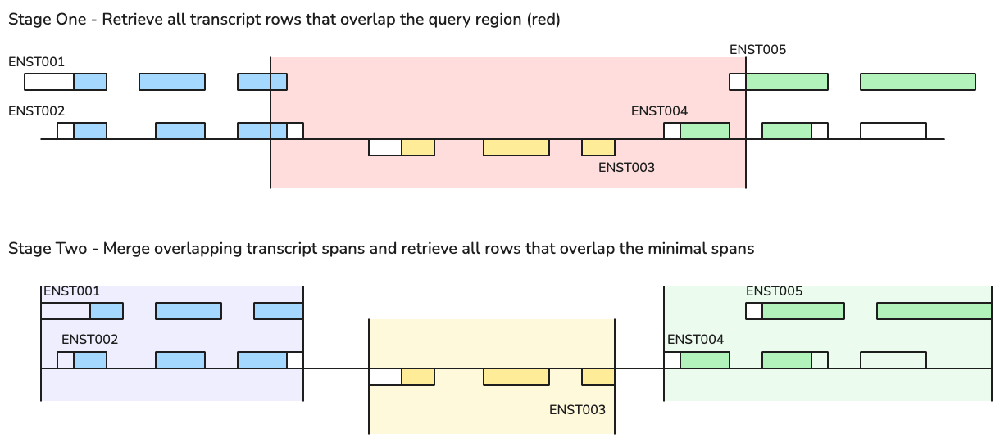

Parsers and Feature Sources#
This page covers the two packages responsible for turning raw input files (and, eventually, databases) into domain Feature objects: ensembl.vep.parsers and ensembl.vep.sources. Per-method detail is in the docstrings, surfaced via the auto-generated API reference — this page only covers the shape of the architecture and the reasoning behind it.
Parser interface#
ensembl.vep.parsers defines a small Parser[T] contract that every format-specific parser implements:
open(file_path, mode="auto") -> Parser # opens a file; mode is "auto" | "query" | "sequential"
close() -> None
seek(region) -> bool # restricts subsequent next() calls to a region
next() -> T | None # one raw record at a time, or None at EOF
records(limit=None) -> list[T] # drains the remaining records from the current position
Plus two static, one-shot helpers that don’t require open()/close() at all:
parse_text(data, limit=None) -> list[T]
parse_file(file_path, limit=None) -> list[T]
The GFF3Parser class is an example: a thin Python attrs class wrapping the compiled Rust ensembl_vep_core extension. The facade exists so callers depend on a stable, documented Python contract rather than the Rust binding directly — open() returns the parser itself and supports the context-manager protocol (with parser.open(path) as p: ...), so the underlying file handle is always closed even if an exception is raised mid-read.
FeatureSource hierarchy#
ensembl.vep.sources mirrors the parser layer one level up — it can produce either Record or domain Feature objects (Transcript, Variation, etc.):
FeatureSource (abstract root)
| get_all_records() -> list[Record]
| iter_all_records() -> list[Record]
│ get_records_by_region(...) -> list[Record]
│ iter_records_by_region(...) -> Iterator[Record]
| records_to_features(...) -> list[Record]:
│ close()
│ __enter__ / __exit__ (delegates to close())
│
├── FileFeatureSource[P, F] (file-backed; P = parser type, F = feature type)
│ └── concrete sources implement `records_to_features(records) -> list[F]`
│ e.g. GFF3TranscriptSource[GFF3Parser, Transcript]
│
└── DBSource[D, F] (DB-backed; D = DB adaptor type, F = feature type)
└── concrete sources implement `_rows_to_features(rows) -> list[F]`
A concrete source only ever implements that one conversion hook — FileSource/DBSource already provide the four read methods, close(), and context-manager support on top of it.
The records methods allow a source to be pickled, which is required for using multi-processing.
Streaming vs. eager#
FileSource’s default iter_all_records/iter_records_by_region yield each record as soon as it comes off next(), rather than buffering the whole file first:
def iter_all_records(self) -> Iterator[R]:
with self.adaptor.open(self.file_path, mode="sequential") as adaptor:
while (record := adaptor.next()) is not None:
yield record
This default is correct whenever one raw record maps to one (or more) complete features — e.g. one VCF line is one Variation. It is not correct for formats where a feature is assembled from several records, which is exactly the GFF3 case: a Transcript needs its own record plus all of its child exon/CDS records, and possibly a parent gene record.
GFF3TranscriptSource therefore overrides both iterator methods. It reads records one at a time via next(), buffers them, and flushes a complete group as soon as the next “gene” record (or a second top-level transcript record) signals the previous group is finished — emitting Transcript objects without ever holding the whole file in memory at once. This relies on the GFF3 file being sorted in the conventional way (a gene record precedes its transcripts, and each transcript’s exon/CDS children immediately follow it); the source logs this assumption once per call. Files that don’t follow this ordering will still produce some result via the eager path (get_all_features/get_features_by_region, which read the whole file/region up front and don’t depend on ordering), just not via the streaming path.
More detail on specific Parsers and Sources is provided below:
Parsers#
GFF3Parser#
The main parsing functions are implemented in Rust. The Gff3Record and Gff3Parser objects are exposed to Python through PyO3. Files are read by the Rust Gff3Reader object which implements two backends - tabix and sequential. The TabixBackend is used to query a tabix-indexed gff3 file and read from a specific region. The SequentialBackend is used to read a file from start (to finish) and can open a plain or bgzipped gff3 file. The reading mode (query/tabix vs sequential) can be set explicitly from the Python front-end. The default mode is auto, which tries to read in query mode and if not possible (for example if there is no tabix index file) it falls back to sequential mode
The file metadata is provided in a metedata attribute of the Python class, which is a dict. All the header lines are provided as a list of strings under the header key. Individual directives are available separately e.g. gff-version is available as metadata['gff-version']
GTFParser#
The GTFParser is organised in exactly the same way as the GFF3Parser.
The GFF and GTF Parsers are currently implemented as separate objects with a small number of common functions. This is the most straight-forward approach, but comes with some code duplication. In the future, we may change this.
VCFParser#
The VCFParser class has the same structure as the GFF3/GTFParsers. One slight difference is that because information in the header is required to parse the vcf lines, when the backend (Query or Sequential) is created, it reads the top of the file in sequential mode to parse the header and store it. To be able to accept input without header lines, there is a get_header function which checks for a header and if none exists, it creates a default one. It also creates arbitrary sample names if the input has sample information.
FastaParser#
The FastaParser class is able to read both plain/bgzipped FASTA files as well as ones with and without an index. The Query backend can use an .fai index for an uncompressed FASTA file or a combination of .fai and .gzi indexes for bgzipped files. The Sequential backend supports reading both compressed and uncompressed files without an index.
Sources#
Feature Sources#
FeatureSource is an interface for any source that produces features. Inheriting classes must implement the following methods:
get_all_records() -> list[Record]
iter_all_records() -> Iterator[Record]
get_records_by_region(...) -> list[Record]
iter_records_by_region(...) -> Iterator[Record]
records_to_features(...) -> list[Feature]
close() -> None
The methods get_all_features, iter_all_features, get_features_by_region and iter_features_by_region, use records_to_features and the corresponding *records* method to produce Features.
FileFeatureSource#
This implements the get_all_records, get_records_by_region, iter_all_records and iter_records_by_region which retrieve records from the file using the concrete Parser and delegates constructing the Feature objects to the concrete source by making records_to_features an abstract method.
VCFVariationSource#
The VCFVariationSource class is used to make Variation and StructuralVariation objects from records in a VCF file.
StructuralVariation objects are used for structural variants that are represented symbolically; small INDELS are represented by Variation objects.
The VCFVariationSource class inherits from FileFeatureSource and implements records_to_features. This creates a list of Variation and StructuralVariation objects from a list of VcfRecords provided by the VCFParser.
records_to_features decides whether a record is a StructuralVariation object in the following way:
If the REF and ALT alleles are not simple strings of base characters (ACGT)
ANDThe record contains the SVTYPE info field
ORAny of the ALT alleles match one of the symbolic alleles (
<DEL>,<INS>etc.)
ORAny of the ALT alleles match the breakend notation
Otherwise it creates a Variation object
PicklableVCFVariationSource#
PicklableVCFVariationSource is a subclass of VCFVariationSource, that uses raw lines as it’s records, which allows it to be pickled. This is required because the records a read by the run process and the records are turned into variations by the worker in a separate process. To be passed from one process to another, objects must be able to be pickled.
Transcript Sources#
There are currently sources for creating Transcript objects from GFF3/GTF file-backed sources, using the FileFeatureSource interface.
Common GXF class#
The GXFTranscriptSource implements the common functionality for the concrete GFF3/GTF sources and GFF3TranscriptSource and GTFTranscriptSource implement anything that is needed to account for the differences between the two formats. For example, getting the identifier of a record or a parent record. Rows from a GFF3/GTF file are returned as GFF3/GTFRecord objects.
GXFTranscriptSource implements the records_to_features() method. It overrides FileFeatureSource’s get_records_by_region method in order to be able to filter by feature type.
It also overrides iter_all_features(), iter_features_by_region() and get_features_by_region() to deal with the specificities of the GFF3/GTF format. This is because multiple rows in a GFF3/GTF file represent a single transcript (the parent gene, the transcripts, its exons and potentially its CDS).
get_features_by_region()
This function uses a two-stage process because not all of a transcript’s features (e.g. exons) will overlap the requested region and therefore wouldn’t be retrieved if we simply query the file by the region.
First, it fetches all of the transcript rows that overlap the region to get the complete set of spans that the transcripts overlap. The transcript spans are merged to get a minimal set of spans.
Second, it retrieves all of the rows that overlap the minimal spans created by the overlapping transcripts.

The main function for building transcripts is _build_transcripts(). It takes a set of GFF3/GTFRecord objects, groups them by transcript and uses each group of records to create a Transcript object. A gene can have multiple transcripts, so the gene records and Gene objects created from them are cached to allow reuse as are Slice objects.
The _query_typed_records(), get_record_id() and get_parent_ids() are abstract methods that are implemented by the separate GFF3/GTFTranscriptSource objects.
Sequence Sources#
SequenceSource is an abstract base class for any source of sequence data (DB, File, Cache etc.). The main method is get_sequence_by_start_end_strand which returns sequence from a sequence region for the specified coordinates and strand. Actually retrieving the sequence is delegated to _fetch_sequence_chunk which has to be implemented by the inheriting class. It also has a sequence cache, implemented by a SequenceCache object.
FileSequenceSource#
The FileSequenceSource class inherits from SequenceSource and implements _fetch_sequence_chunk which uses FastaParser to get the sequence from a FASTA file.